For printing tests or converting test Excel files to .csv see the "View" mode. For editing tests see the "Edit" mode.
The test steps tool allows the tester to view all the steps required to complete a test. The tester is able to switch to test mode by pressing F3 on their keyboard or by clicking view>Test Steps on the tool bar.
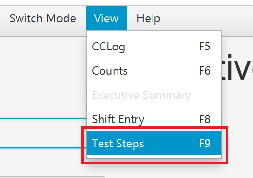The tester may verify that they are viewing the Test Steps by clicking view on the menu bar and recognizing that Test Steps option is greyed out or by pressing F9 on their keyboard.
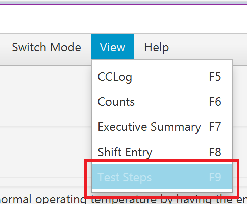First the correct Excel file containing the test steps must be loaded. This is done by clicking on load in the menu bar or pressing Ctrl+L and selecting the file using the file browser.
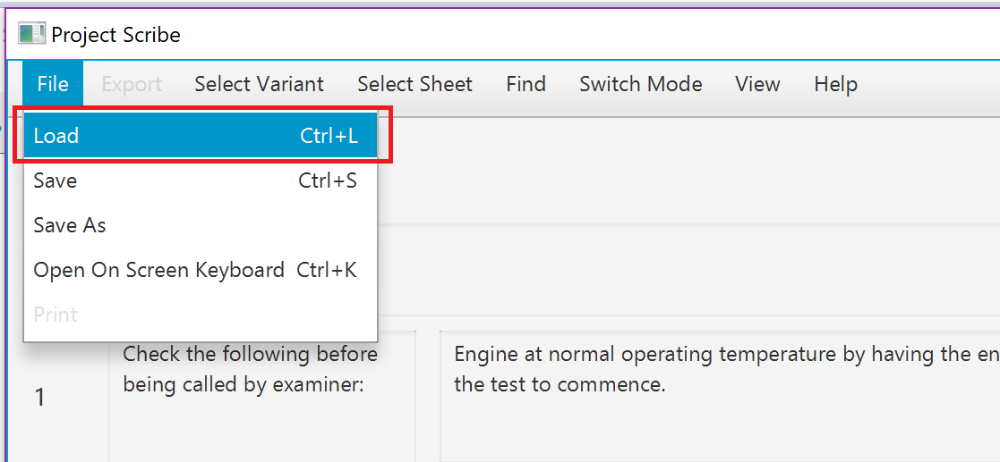Select teh file and click Open to load the file.
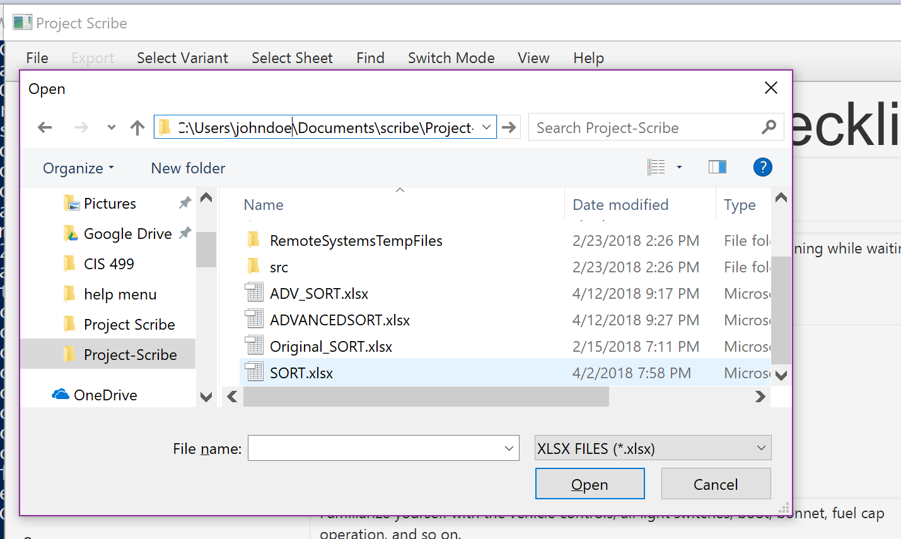Each test step consists of several components as seen in the image below.
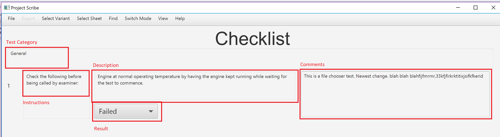One of many categories for each test. The tester may quickly switch to another section by clickig on Find in the menu bar and selecting the desired section.
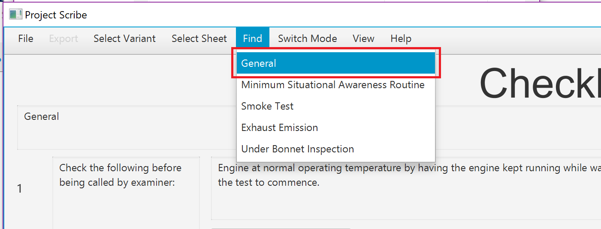Instructions for a given test step.
A more detailed description of the test steps.
Data concerning whether a test step failed, passed, or was not tested is entered in the dropdown menu directly below each test step. Note: if a test failed the tester will not be allowed to to continue to other pages in the Test Steps until a comment is entered for that test step.
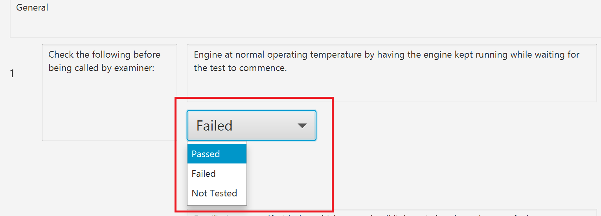Comments regarding the test may be entered here. Note: if a test failed the tester will not be allowed to to continue to other pages in the Test Steps until a comment is entered for that test step.
Click Save under File>Save or press Ctrl+S on the keyboard to save progress.
The CCLog allows the tester to enter in data about events that have occured during a test such as emergencies. To view the CCLog go to view>CCLog in the menu bar or press F5.
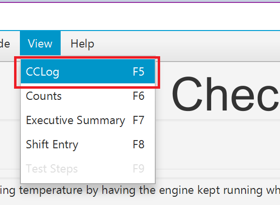Click on the Creat Event button and the event window will appear
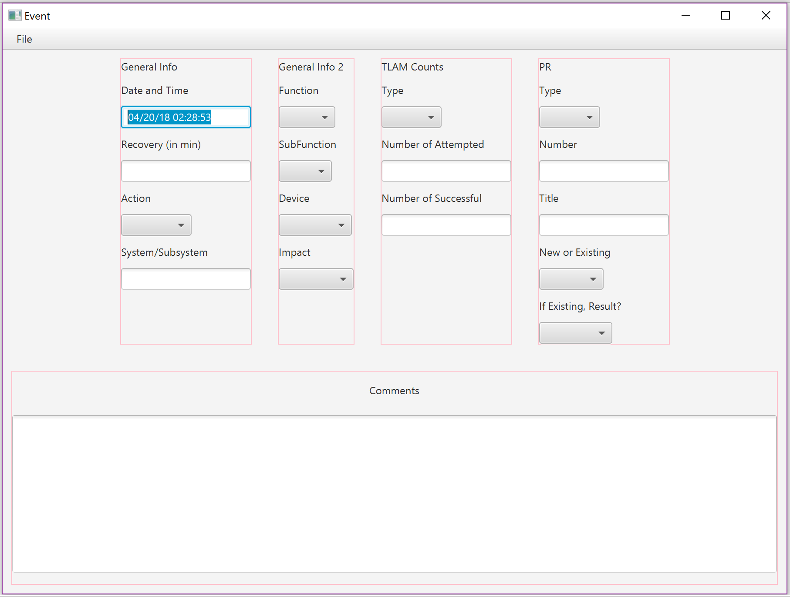A date and time stamp are automatically generated in the first text box. The tester has two boxes to enter in general info. The TLAM counts and PR summary must also be filled in. At the bottom is a comments box for entering in additional information about the event. Click on File>Save to save the data entered.
By clicking on the Edit/View Events button the tester can edit or view all the past events. Each event is displayed in the order from most recent to the first event logged. There are buttons at the bottom of the page to skip navigate all the events logged.
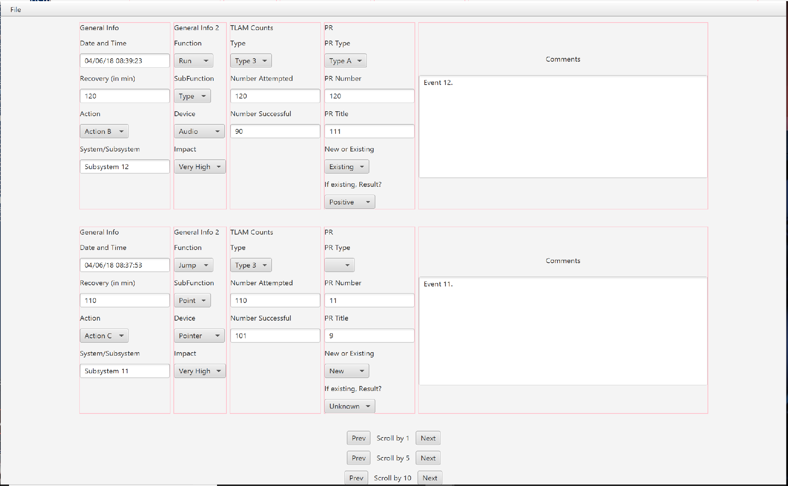The counts tool displays varous metrics about about the data collected in TELAT. Go to Counts by clicking on view> Counts of pressing F6 on a keyboard. In order to view this information, ensure that a test Excel file is loaded and then select the stage (sheet of the Excel file) you would like to view data for and click the counts button.
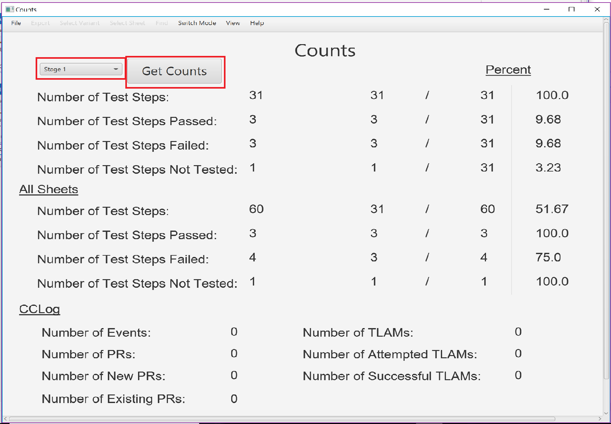The metrics directly under the stage drop down menu and counts button are related to the stage (sheet of the Excel file) selected. The All Sheets Section displays metrics from all sheets in the current Excel file. The CClog section displays metrics related to all events in the CCLog.
This tool displays and overview of a test. Go to Executive Summary by clicking view>Executive Summary in the menu bar or clicking F7.
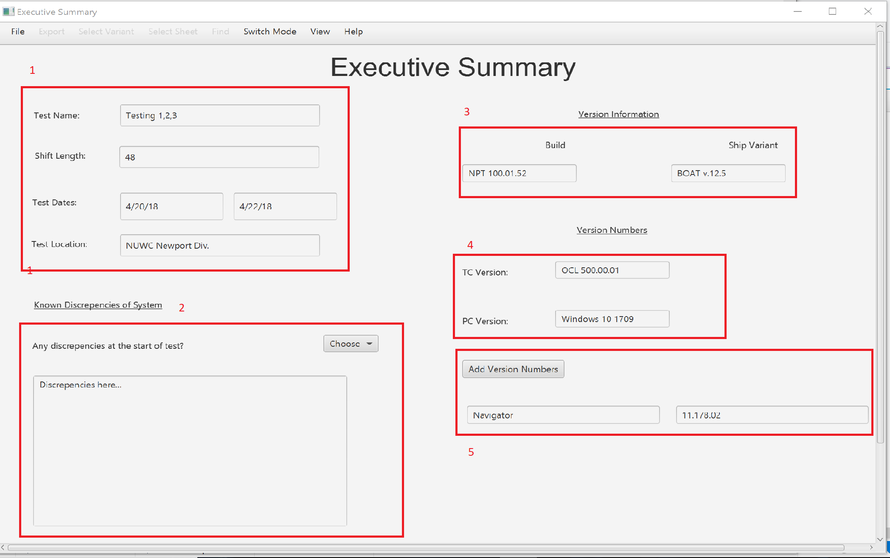The first section outline in a red box allows data about the Test Name, Shift Length, Test Dates, and Test Location to be entered. The second section outlined in red allows for information regarding any know ndiscrepencies of the system to be logged. The dropdown menu has yes/no options with regards discrepencies. If yes is selected, a comment box appears for additional information to be entered. The third box outlined in red allows information about the version informatio to be logged which includes the Build and Ship Variant. The fourth box allows for TC and PC version information to be logged. The fifth box outlined in red contains a button for addit addition text boxes for more version information.
The Shift entry tool allows for information about the shifts and other information involving personel and shift lengths to be logged. Go to shift entry by clicking view>Shift Entry or by pressing F8 on your keyboard. 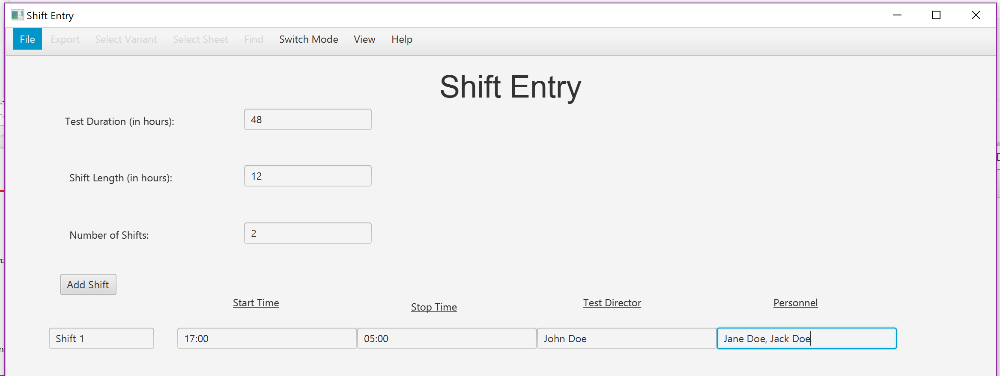
This mode allows a tester to view all of the test steps without the ability to edit them. Go to edit mode by clicking Switch Mode> Edit Mode in the menu bar or by pressing F2 on a keyboard. The user also has the ability to print and convert the file to .csv format.
This mode is password protected. In this mode a superviser has the ability to edit all of the test steps. The changes must be saved by clicking File> Save or by pressing Ctrl+s on a keyboard before they are reflected in the loaded Excel file.